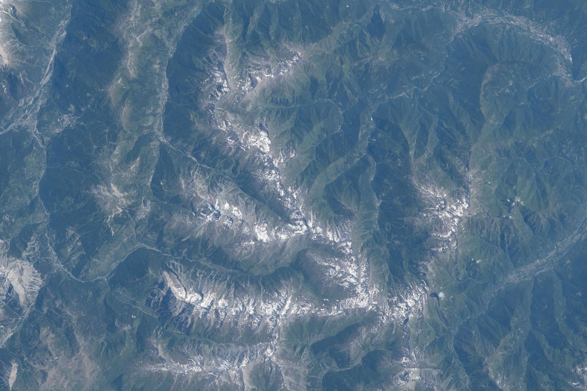
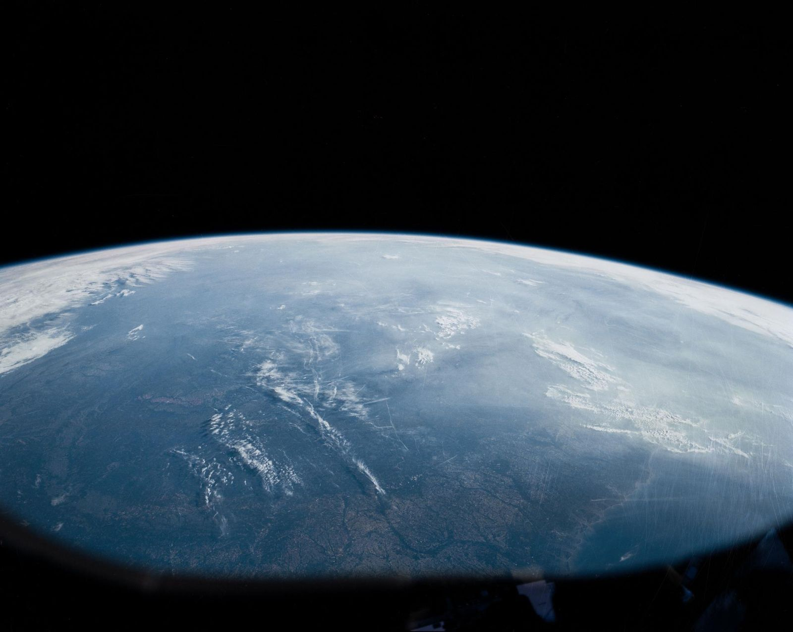

Part 3: The Changing Surface · Chapter 11 of 15
Mountains
Built by colliding plates, destroyed by water and ice.

Most great mountain ranges form where plates converge. When an ocean plate sinks beneath a continent, the edge of the continent is squeezed and thickened, and volcanoes grow on top. The Andes formed this way. When two continents collide, as India and Asia did, or Africa and Europe, the crust between them is folded, stacked and thickened into ranges such as the Himalayas and the Alps.
Roots like an iceberg
Continental crust is lighter than the mantle beneath it and floats on it, a little like an iceberg on water. A mountain range therefore has a deep root of thickened crust extending far down into the mantle. Under the Himalayas the crust is roughly twice its normal thickness. As erosion removes rock from the top, the root slowly rises to replace it, which is why rocks that formed deep underground end up exposed on mountain tops.
The life of a mountain range
Mountains are attacked as soon as they rise. Frost, glaciers and rivers cut them into peaks and valleys and carry them away as sediment. Young ranges such as the Himalayas are high and jagged. Old ranges such as the Appalachians in North America were once as high as the Alps but have been worn down over hundreds of millions of years into rounded hills.

Key terms
- fold mountains
- Mountains formed when rock layers are squeezed between plates and buckle upwards.
- mountain root
- The thick part of the crust below a mountain chain. Like an iceberg, most of it is hidden beneath the surface.
- density
- How heavy a material is for its size. Light continental rock floats on denser rock below.
- volcanic chain
- A line of volcanoes formed along the edge of a plate.
- Andes
- The volcano-studded mountains of South America. They rose as an ocean plate slid beneath the continent.
- Alps
- A mountain chain in Europe. The main squeezes that formed it happened about 25 million years ago.
- ancient mountains
- The worn-down remains of much higher mountains, such as the Scottish Highlands, the Urals and the Appalachians.
- plain
- A wide area of flat land. Over millions of years, even the highest mountains are worn down to plains.
Check your understanding
Think of your answer, then open each question to compare.
How did the Andes form?
An ocean plate sinking beneath South America squeezed and thickened the continent's edge and fed volcanoes.
What is a mountain root?
The thick, light crust that extends deep beneath a mountain range, like the hidden part of an iceberg.
Why are the Appalachians lower and more rounded than the Himalayas?
They are far older and have been eroded for hundreds of millions of years.